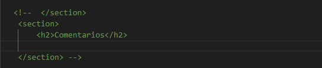

Lenguaje de marcas HTML
Etiquetas para las Tablas
Las tablas de contenido nos permiten almacenar los datos de forma ordenada. El principio y final de una tabla se define con las etiquetas <table> y </table>. Las filas se engloban con las etiquetas <tr> </tr> y las columnas se crean mediante las etiquetas <td> </td> (las etiquetas <td> siempre estarán dentro de una fila <tr>). Las etiquetas <th> </th> se utilizan para representar los encabezados.
